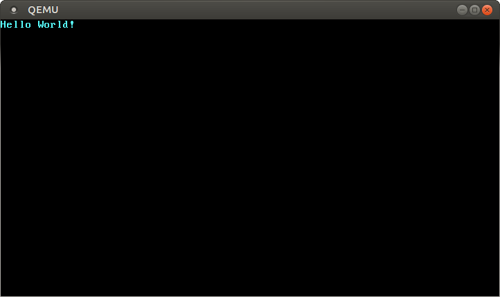

最小内核
翻译内容： 这是对原文章 A Minimal Rust Kernel 的社区中文翻译。它可能不完整，过时或者包含错误。可以在 这个 Issue 上评论和提问！
翻译者： @luojia65, @Rustin-Liu 和 @liuyuran. With contributions from @JiangengDong.
在这篇文章中，我们将基于 x86架构（the x86 architecture），使用 Rust 语言，编写一个最小化的 64 位内核。我们将从上一章中构建的[独立式可执行程序][freestanding-rust-binary]开始，构建自己的内核；它将向显示器打印字符串，并能被打包为一个能够引导启动的磁盘映像（disk image）。
此博客在 GitHub 上公开开发. 如果您有任何问题或疑问，请在此处打开一个 issue。 您也可以在底部发表评论. 这篇文章的完整源代码可以在 [post-02] post branch 分支中找到。
目录
🔗引导启动
当我们启动电脑时，主板 ROM内存储的固件（firmware）将会运行：它将负责电脑的加电自检（power-on self test），可用内存（available RAM）的检测，以及 CPU 和其它硬件的预加载。这之后，它将寻找一个可引导的存储介质（bootable disk），并开始引导启动其中的内核（kernel）。
x86 架构支持两种固件标准： BIOS（Basic Input/Output System）和 UEFI（Unified Extensible Firmware Interface）。其中，BIOS 标准显得陈旧而过时，但实现简单，并为 1980 年代后的所有 x86 设备所支持；相反地，UEFI 更现代化，功能也更全面，但开发和构建更复杂（至少从我的角度看是如此）。
在这篇文章中，我们暂时只提供 BIOS 固件的引导启动方式，但是UEFI支持也已经在计划中了。如果你希望帮助我们推进它，请查阅这份 Github issue。
🔗BIOS 启动
几乎所有的 x86 硬件系统都支持 BIOS 启动，这也包含新型的、基于 UEFI、用模拟 BIOS（emulated BIOS）的方式向后兼容的硬件系统。这可以说是一件好事情，因为无论是上世纪还是现在的硬件系统，你都只需编写同样的引导启动逻辑；但这种兼容性有时也是 BIOS 引导启动最大的缺点，因为这意味着在系统启动前，你的 CPU 必须先进入一个 16 位系统兼容的实模式（real mode），这样 1980 年代古老的引导固件才能够继续使用。
让我们从头开始，理解一遍 BIOS 启动的过程。
当电脑启动时，主板上特殊的闪存中存储的 BIOS 固件将被加载。BIOS 固件将会加电自检、初始化硬件，然后它将寻找一个可引导的存储介质。如果找到了，那电脑的控制权将被转交给引导程序（bootloader）：一段存储在存储介质的开头的、512字节长度的程序片段。大多数的引导程序长度都大于512字节——所以通常情况下，引导程序都被切分为一段优先启动、长度不超过512字节、存储在介质开头的第一阶段引导程序（first stage bootloader），和一段随后由其加载的、长度可能较长、存储在其它位置的第二阶段引导程序（second stage bootloader）。
引导程序必须决定内核的位置，并将内核加载到内存。引导程序还需要将 CPU 从 16 位的实模式，先切换到 32 位的保护模式（protected mode），最终切换到 64 位的长模式（long mode）：此时，所有的 64 位寄存器和整个主内存（main memory）才能被访问。引导程序的第三个作用，是从 BIOS 查询特定的信息，并将其传递到内核；如查询和传递内存映射表（memory map）。
编写一个引导程序并不是一个简单的任务，因为这需要使用汇编语言，而且必须经过许多意图并不明显的步骤——比如，把一些魔术数字（magic number）写入某个寄存器。因此，我们不会讲解如何编写自己的引导程序，而是推荐 bootimage 工具——它能够自动并且方便地为你的内核准备一个引导程序。
🔗Multiboot 标准
每个操作系统都实现自己的引导程序，而这只对单个操作系统有效。为了避免这样的僵局，1995 年，自由软件基金会（Free Software Foundation）颁布了一个开源的引导程序标准——Multiboot。这个标准定义了引导程序和操作系统间的统一接口，所以任何适配 Multiboot 的引导程序，都能用来加载任何同样适配了 Multiboot 的操作系统。GNU GRUB 是一个可供参考的 Multiboot 实现，它也是最热门的Linux系统引导程序之一。
要编写一款适配 Multiboot 的内核，我们只需要在内核文件开头，插入被称作 Multiboot头（Multiboot header）的数据片段。这让 GRUB 很容易引导任何操作系统，但是，GRUB 和 Multiboot 标准也有一些可预知的问题：
- 它们只支持 32 位的保护模式。这意味着，在引导之后，你依然需要配置你的 CPU，让它切换到 64 位的长模式；
- 它们被设计为精简引导程序，而不是精简内核。举个例子，内核需要以调整过的默认页长度（default page size）被链接，否则 GRUB 将无法找到内核的 Multiboot 头。另一个例子是引导信息（boot information），这个包含着大量与架构有关的数据，会在引导启动时，被直接传到操作系统，而不会经过一层清晰的抽象；
- GRUB 和 Multiboot 标准并没有被详细地解释，阅读相关文档需要一定经验；
- 为了创建一个能够被引导的磁盘映像，我们在开发时必须安装 GRUB：这加大了基于 Windows 或 macOS 开发内核的难度。
出于这些考虑，我们决定不使用 GRUB 或者 Multiboot 标准。然而，Multiboot 支持功能也在 bootimage 工具的开发计划之中，所以从原理上讲，如果选用 bootimage 工具，在未来使用 GRUB 引导你的系统内核是可能的。 如果你对编写一个支持 Mutiboot 标准的内核有兴趣，可以查阅 初版文档。
🔗UEFI
（截至此时，我们并未提供UEFI相关教程，但我们确实有此意向。如果你愿意提供一些帮助，请在 Github issue 告知我们，不胜感谢。）
🔗最小内核
现在我们已经明白电脑是如何启动的，那也是时候编写我们自己的内核了。我们的小目标是，创建一个内核的磁盘映像，它能够在启动时，向屏幕输出一行“Hello World!”；我们的工作将基于上一章构建的独立式可执行程序。
如果读者还有印象的话，在上一章，我们使用 cargo 构建了一个独立的二进制程序；但这个程序依然基于特定的操作系统平台：因平台而异，我们需要定义不同名称的函数，且使用不同的编译指令。这是因为在默认情况下，cargo 会为特定的宿主系统（host system）构建源码，比如为你正在运行的系统构建源码。这并不是我们想要的，因为我们的内核不应该基于另一个操作系统——我们想要编写的，就是这个操作系统。确切地说，我们想要的是，编译为一个特定的目标系统（target system）。
🔗安装 Nightly Rust
Rust 语言有三个发行频道（release channel），分别是 stable、beta 和 nightly。《Rust 程序设计语言》中对这三个频道的区别解释得很详细，可以前往这里看一看。为了搭建一个操作系统，我们需要一些只有 nightly 会提供的实验性功能，所以我们需要安装一个 nightly 版本的 Rust。
要管理安装好的 Rust，我强烈建议使用 rustup：它允许你同时安装 nightly、beta 和 stable 版本的编译器，而且让更新 Rust 变得容易。你可以输入 rustup override add nightly 来选择在当前目录使用 nightly 版本的 Rust。或者，你也可以在项目根目录添加一个名称为 rust-toolchain、内容为 nightly 的文件。要检查你是否已经安装了一个 nightly，你可以运行 rustc --version：返回的版本号末尾应该包含-nightly。
Nightly 版本的编译器允许我们在源码的开头插入特性标签（feature flag），来自由选择并使用大量实验性的功能。举个例子，要使用实验性的内联汇编（asm!宏），我们可以在 main.rs 的顶部添加 #![feature(asm)]。要注意的是，这样的实验性功能不稳定（unstable），意味着未来的 Rust 版本可能会修改或移除这些功能，而不会有预先的警告过渡。因此我们只有在绝对必要的时候，才应该使用这些特性。
🔗目标配置清单
通过 --target 参数，cargo 支持不同的目标系统。这个目标系统可以使用一个目标三元组（target triple）来描述，它描述了 CPU 架构、平台供应者、操作系统和应用程序二进制接口（Application Binary Interface, ABI）。比方说，目标三元组 x86_64-unknown-linux-gnu 描述一个基于 x86_64 架构 CPU 的、没有明确的平台供应者的 linux 系统，它遵循 GNU 风格的 ABI。Rust 支持许多不同的目标三元组，包括安卓系统对应的 arm-linux-androideabi 和 WebAssembly使用的wasm32-unknown-unknown。
为了编写我们的目标系统，并且鉴于我们需要做一些特殊的配置（比如没有依赖的底层操作系统），已经支持的目标三元组都不能满足我们的要求。幸运的是，只需使用一个 JSON 文件，Rust 便允许我们定义自己的目标系统；这个文件常被称作目标配置清单（target specification）。比如，一个描述 x86_64-unknown-linux-gnu 目标系统的配置清单大概长这样：
{
"llvm-target": "x86_64-unknown-linux-gnu",
"data-layout": "e-m:e-i64:64-f80:128-n8:16:32:64-S128",
"arch": "x86_64",
"target-endian": "little",
"target-pointer-width": "64",
"target-c-int-width": "32",
"os": "linux",
"executables": true,
"linker-flavor": "gcc",
"pre-link-args": ["-m64"],
"morestack": false
}
一个配置清单中包含多个配置项（field）。大多数的配置项都是 LLVM 需求的，它们将配置为特定平台生成的代码。打个比方，data-layout 配置项定义了不同的整数、浮点数、指针类型的长度；另外，还有一些 Rust 用作条件编译的配置项，如 target-pointer-width。还有一些类型的配置项，定义了这个包该如何被编译，例如，pre-link-args 配置项指定了应该向链接器（linker）传入的参数。
我们将把我们的内核编译到 x86_64 架构，所以我们的配置清单将和上面的例子相似。现在，我们来创建一个名为 x86_64-blog_os.json 的文件——当然也可以选用自己喜欢的文件名——里面包含这样的内容：
{
"llvm-target": "x86_64-unknown-none",
"data-layout": "e-m:e-i64:64-f80:128-n8:16:32:64-S128",
"arch": "x86_64",
"target-endian": "little",
"target-pointer-width": "64",
"target-c-int-width": "32",
"os": "none",
"executables": true
}
需要注意的是，因为我们要在裸机（bare metal）上运行内核，我们已经修改了 llvm-target 的内容，并将 os 配置项的值改为 none。
我们还需要添加下面与编译相关的配置项：
"linker-flavor": "ld.lld",
"linker": "rust-lld",
在这里，我们不使用平台默认提供的链接器，因为它可能不支持 Linux 目标系统。为了链接我们的内核，我们使用跨平台的 LLD链接器（LLD linker），它是和 Rust 一起打包发布的。
"panic-strategy": "abort",
这个配置项的意思是，我们的编译目标不支持 panic 时的栈展开（stack unwinding），所以我们选择直接在 panic 时中止（abort on panic）。这和在 Cargo.toml 文件中添加 panic = "abort" 选项的作用是相同的，所以我们可以不在这里的配置清单中填写这一项。
"disable-redzone": true,
我们正在编写一个内核，所以我们迟早要处理中断。要安全地实现这一点，我们必须禁用一个与红区（redzone）有关的栈指针优化：因为此时，这个优化可能会导致栈被破坏。如果需要更详细的资料，请查阅我们的一篇关于 禁用红区 的短文。
"features": "-mmx,-sse,+soft-float",
features 配置项被用来启用或禁用某个目标 CPU 特征（CPU feature）。通过在它们前面添加-号，我们将 mmx 和 sse 特征禁用；添加前缀+号，我们启用了 soft-float 特征。
mmx 和 sse 特征决定了是否支持单指令多数据流（Single Instruction Multiple Data，SIMD）相关指令，这些指令常常能显著地提高程序层面的性能。然而，在内核中使用庞大的 SIMD 寄存器，可能会造成较大的性能影响：因为每次程序中断时，内核不得不储存整个庞大的 SIMD 寄存器以备恢复——这意味着，对每个硬件中断或系统调用，完整的 SIMD 状态必须存到主存中。由于 SIMD 状态可能相当大（512~1600 个字节），而中断可能时常发生，这些额外的存储与恢复操作可能显著地影响效率。为解决这个问题，我们对内核禁用 SIMD（但这不意味着禁用内核之上的应用程序的 SIMD 支持）。
禁用 SIMD 产生的一个问题是，x86_64 架构的浮点数指针运算默认依赖于 SIMD 寄存器。我们的解决方法是，启用 soft-float 特征，它将使用基于整数的软件功能，模拟浮点数指针运算。
为了让读者的印象更清晰，我们撰写了一篇关于 [禁用 SIMD]disabling SIMD 的短文。
现在，我们将各个配置项整合在一起。我们的目标配置清单应该长这样：
{
"llvm-target": "x86_64-unknown-none",
"data-layout": "e-m:e-i64:64-f80:128-n8:16:32:64-S128",
"arch": "x86_64",
"target-endian": "little",
"target-pointer-width": "64",
"target-c-int-width": "32",
"os": "none",
"executables": true,
"linker-flavor": "ld.lld",
"linker": "rust-lld",
"panic-strategy": "abort",
"disable-redzone": true,
"features": "-mmx,-sse,+soft-float"
}
🔗编译内核
要编译我们的内核，我们将使用 Linux 系统的编写风格（这可能是 LLVM 的默认风格）。这意味着，我们需要把前一篇文章中编写的入口点重命名为 _start：
// src/main.rs
#![no_std] // 不链接 Rust 标准库
#![no_main] // 禁用所有 Rust 层级的入口点
use core::panic::PanicInfo;
/// 这个函数将在 panic 时被调用
#[panic_handler]
fn panic(_info: &PanicInfo) -> ! {
loop {}
}
#[no_mangle] // 不重整函数名
pub extern "C" fn _start() -> ! {
// 因为编译器会寻找一个名为 `_start` 的函数，所以这个函数就是入口点
// 默认命名为 `_start`
loop {}
}
注意的是，无论你开发使用的是哪类操作系统，你都需要将入口点命名为 _start。前一篇文章中编写的 Windows 系统和 macOS 对应的入口点不应该被保留。
通过把 JSON 文件名传入 --target 选项，我们现在可以开始编译我们的内核。让我们试试看：
> cargo build --target x86_64-blog_os.json
error[E0463]: can't find crate for `core`
毫不意外的编译失败了，错误信息告诉我们编译器没有找到 core 这个crate，它包含了Rust语言中的部分基础类型，如 Result、Option、迭代器等等，并且它还会隐式链接到 no_std 特性里面。
通常状况下，core crate以预编译库（precompiled library）的形式与 Rust 编译器一同发布——这时，core crate只对支持的宿主系统有效，而对我们自定义的目标系统无效。如果我们想为其它系统编译代码，我们需要为这些系统重新编译整个 core crate。
🔗build-std 选项
此时就到了cargo中 build-std 特性 登场的时刻，该特性允许你按照自己的需要重编译 core 等标准crate，而不需要使用Rust安装程序内置的预编译版本。 但是该特性是全新的功能，到目前为止尚未完全完成，所以它被标记为 “unstable” 且仅被允许在 [nightly Rust 编译器][nightly Rust compilers] 环境下调用。
[nightly Rust compilers]: #安装 Nightly Rust
要启用该特性，你需要创建一个 cargo 配置 文件，即 .cargo/config.toml，并写入以下语句：
# in .cargo/config.toml
[unstable]
build-std = ["core", "compiler_builtins"]
该配置会告知cargo需要重新编译 core 和 compiler_builtins 这两个crate，其中 compiler_builtins 是 core 的必要依赖。 另外重编译需要提供源码，我们可以使用 rustup component add rust-src 命令来下载它们。
Note: 仅 2020-07-15 之后的Rust nightly版本支持 unstable.build-std 配置项。
在设定 unstable.build-std 配置项并安装 rust-src 组件之后，我们就可以开始编译了：
> cargo build --target x86_64-blog_os.json
Compiling core v0.0.0 (/…/rust/src/libcore)
Compiling rustc-std-workspace-core v1.99.0 (/…/rust/src/tools/rustc-std-workspace-core)
Compiling compiler_builtins v0.1.32
Compiling blog_os v0.1.0 (/…/blog_os)
Finished dev [unoptimized + debuginfo] target(s) in 0.29 secs
如你所见，在执行 cargo build 之后， core、rustc-std-workspace-core （compiler_builtins 的依赖）和 compiler_builtins crate被重新编译了。
🔗内存相关函数
目前来说，Rust编译器假定所有内置函数（built-in functions）在所有系统内都是存在且可用的。事实上这个前提只对了一半，
绝大多数内置函数都可以被 compiler_builtins 提供，而这个crate刚刚已经被我们重编译过了，然而部分内存相关函数是需要操作系统相关的标准C库提供的。
比如，memset（该函数可以为一个内存块内的所有比特进行赋值）、memcpy（将一个内存块里的数据拷贝到另一个内存块）以及memcmp（比较两个内存块的数据）。
好在我们的内核暂时还不需要用到这些函数，但是不要高兴的太早，当我们编写更丰富的功能（比如拷贝数据结构）时就会用到了。
现在我们当然无法提供操作系统相关的标准C库，所以我们需要使用其他办法提供这些东西。一个显而易见的途径就是自己实现 memset 这些函数，但不要忘记加入 #[no_mangle] 语句，以避免编译时被自动重命名。 当然，这样做很危险，底层函数中最细微的错误也会将程序导向不可预知的未来。比如，你可能在实现 memcpy 时使用了一个 for 循环，然而 for 循环本身又会调用 IntoIterator::into_iter 这个trait方法，这个方法又会再次调用 memcpy，此时一个无限递归就产生了，所以还是使用经过良好测试的既存实现更加可靠。
幸运的是，compiler_builtins 事实上自带了所有相关函数的实现，只是在默认情况下，出于避免和标准C库发生冲突的考量被禁用掉了，此时我们需要将 build-std-features 配置项设置为 ["compiler-builtins-mem"] 来启用这个特性。如同 build-std 配置项一样，该特性可以使用 -Z 参数启用，也可以在 .cargo/config.toml 中使用 unstable 配置集启用。现在我们的配置文件中的相关部分是这样子的：
# in .cargo/config.toml
[unstable]
build-std-features = ["compiler-builtins-mem"]
build-std = ["core", "compiler_builtins"]
（compiler-builtins-mem 特性是在 这个PR 中被引入的，所以你的Rust nightly更新时间必须晚于 2020-09-30。）
该参数为 compiler_builtins 启用了 mem 特性，至于具体效果，就是已经在内部通过 #[no_mangle] 向链接器提供了 memcpy 等函数的实现。
经过这些修改，我们的内核已经完成了所有编译所必需的函数，那么让我们继续对代码进行完善。
🔗设置默认编译目标
每次调用 cargo build 命令都需要传入 --target 参数很麻烦吧？其实我们可以复写掉默认值，从而省略这个参数，只需要在 .cargo/config.toml 中加入以下 cargo 配置：
# in .cargo/config.toml
[build]
target = "x86_64-blog_os.json"
这个配置会告知 cargo 使用 x86_64-blog_os.json 这个文件作为默认的 --target 参数，此时只输入短短的一句 cargo build 就可以编译到指定平台了。如果你对其他配置项感兴趣，亦可以查阅 官方文档。
那么现在我们已经可以用 cargo build 完成程序编译了，然而被成功调用的 _start 函数的函数体依然是一个空空如也的循环，是时候往屏幕上输出一点什么了。
🔗向屏幕打印字符
要做到这一步，最简单的方式是写入 VGA 字符缓冲区（VGA text buffer）：这是一段映射到 VGA 硬件的特殊内存片段，包含着显示在屏幕上的内容。通常情况下，它能够存储 25 行、80 列共 2000 个字符单元（character cell）；每个字符单元能够显示一个 ASCII 字符，也能设置这个字符的前景色（foreground color）和背景色（background color）。输出到屏幕的字符大概长这样：

我们将在下篇文章中详细讨论 VGA 字符缓冲区的内存布局；目前我们只需要知道，这段缓冲区的地址是 0xb8000，且每个字符单元包含一个 ASCII 码字节和一个颜色字节。
我们的实现就像这样：
static HELLO: &[u8] = b"Hello World!";
#[no_mangle]
pub extern "C" fn _start() -> ! {
let vga_buffer = 0xb8000 as *mut u8;
for (i, &byte) in HELLO.iter().enumerate() {
unsafe {
*vga_buffer.offset(i as isize * 2) = byte;
*vga_buffer.offset(i as isize * 2 + 1) = 0xb;
}
}
loop {}
}
在这段代码中，我们预先定义了一个字节字符串（byte string）类型的静态变量（static variable），名为 HELLO。我们首先将整数 0xb8000 转换（cast）为一个裸指针（raw pointer）。这之后，我们迭代 HELLO 的每个字节，使用 enumerate 获得一个额外的序号变量 i。在 for 语句的循环体中，我们使用 offset 偏移裸指针，解引用它，来将字符串的每个字节和对应的颜色字节——0xb 代表淡青色——写入内存位置。
要注意的是，所有的裸指针内存操作都被一个 unsafe 语句块（unsafe block）包围。这是因为，此时编译器不能确保我们创建的裸指针是有效的；一个裸指针可能指向任何一个你内存位置；直接解引用并写入它，也许会损坏正常的数据。使用 unsafe 语句块时，程序员其实在告诉编译器，自己保证语句块内的操作是有效的。事实上，unsafe 语句块并不会关闭 Rust 的安全检查机制；它允许你多做的事情只有四件。
使用 unsafe 语句块要求程序员有足够的自信，所以必须强调的一点是，肆意使用 unsafe 语句块并不是 Rust 编程的一贯方式。在缺乏足够经验的前提下，直接在 unsafe 语句块内操作裸指针，非常容易把事情弄得很糟糕；比如，在不注意的情况下，我们很可能会意外地操作缓冲区以外的内存。
在这样的前提下，我们希望最小化 unsafe 语句块的使用。使用 Rust 语言，我们能够将不安全操作将包装为一个安全的抽象模块。举个例子，我们可以创建一个 VGA 缓冲区类型，把所有的不安全语句封装起来，来确保从类型外部操作时，无法写出不安全的代码：通过这种方式，我们只需要最少的 unsafe 语句块来确保我们不破坏内存安全（memory safety）。在下一篇文章中，我们将会创建这样的 VGA 缓冲区封装。
🔗启动内核
既然我们已经有了一个能够打印字符的可执行程序，是时候把它运行起来试试看了。首先，我们将编译完毕的内核与引导程序链接，来创建一个引导映像；这之后，我们可以在 QEMU 虚拟机中运行它，或者通过 U 盘在真机上运行。
🔗创建引导映像
要将可执行程序转换为可引导的映像（bootable disk image），我们需要把它和引导程序链接。这里，引导程序将负责初始化 CPU 并加载我们的内核。
编写引导程序并不容易，所以我们不编写自己的引导程序，而是使用已有的 bootloader 包；无需依赖于 C 语言，这个包基于 Rust 代码和内联汇编，实现了一个五脏俱全的 BIOS 引导程序。为了用它启动我们的内核，我们需要将它添加为一个依赖项，在 Cargo.toml 中添加下面的代码：
# in Cargo.toml
[dependencies]
bootloader = "0.9.23"
只添加引导程序为依赖项，并不足以创建一个可引导的磁盘映像；我们还需要内核编译完成之后，将内核和引导程序组合在一起。然而，截至目前，原生的 cargo 并不支持在编译完成后添加其它步骤（详见这个 issue）。
为了解决这个问题，我们建议使用 bootimage 工具——它将会在内核编译完毕后，将它和引导程序组合在一起，最终创建一个能够引导的磁盘映像。我们可以使用下面的命令来安装这款工具：
cargo install bootimage
为了运行 bootimage 以及编译引导程序，我们需要安装 rustup 模块 llvm-tools-preview——我们可以使用 rustup component add llvm-tools-preview 来安装这个工具。
成功安装 bootimage 后，创建一个可引导的磁盘映像就变得相当容易。我们来输入下面的命令：
> cargo bootimage
可以看到的是，bootimage 工具开始使用 cargo build 编译你的内核，所以它将增量编译我们修改后的源码。在这之后，它会编译内核的引导程序，这可能将花费一定的时间；但和所有其它依赖包相似的是，在首次编译后，产生的二进制文件将被缓存下来——这将显著地加速后续的编译过程。最终，bootimage 将把内核和引导程序组合为一个可引导的磁盘映像。
运行这行命令之后，我们应该能在 target/x86_64-blog_os/debug 目录内找到我们的映像文件 bootimage-blog_os.bin。我们可以在虚拟机内启动它，也可以刻录到 U 盘上以便在真机上启动。（需要注意的是，因为文件格式不同，这里的 bin 文件并不是一个光驱映像，所以将它刻录到光盘不会起作用。）
事实上，在这行命令背后，bootimage 工具执行了三个步骤：
- 编译我们的内核为一个 ELF（Executable and Linkable Format）文件；
- 编译引导程序为独立的可执行文件；
- 将内核 ELF 文件按字节拼接（append by bytes）到引导程序的末端。
当机器启动时，引导程序将会读取并解析拼接在其后的 ELF 文件。这之后，它将把程序片段映射到分页表（page table）中的虚拟地址（virtual address），清零 BSS段（BSS segment），还将创建一个栈。最终它将读取入口点地址（entry point address）——我们程序中 _start 函数的位置——并跳转到这个位置。
🔗在 QEMU 中启动内核
现在我们可以在虚拟机中启动内核了。为了在 QEMU 中启动内核，我们使用下面的命令：
> qemu-system-x86_64 -drive format=raw,file=target/x86_64-blog_os/debug/bootimage-blog_os.bin
warning: TCG doesn't support requested feature: CPUID.01H:ECX.vmx [bit 5]
然后就会弹出一个独立窗口：

我们可以看到，屏幕窗口已经显示出 “Hello World!” 字符串。祝贺你！
🔗在真机上运行内核
我们也可以使用 dd 工具把内核写入 U 盘，以便在真机上启动。可以输入下面的命令：
> dd if=target/x86_64-blog_os/debug/bootimage-blog_os.bin of=/dev/sdX && sync
在这里，sdX 是U盘的设备名（device name）。请注意，在选择设备名的时候一定要极其小心，因为目标设备上已有的数据将全部被擦除。
写入到 U 盘之后，你可以在真机上通过引导启动你的系统。视情况而定，你可能需要在 BIOS 中打开特殊的启动菜单，或者调整启动顺序。需要注意的是，bootloader 包暂时不支持 UEFI，所以我们并不能在 UEFI 机器上启动。
🔗使用 cargo run
要让在 QEMU 中运行内核更轻松，我们可以设置在 cargo 配置文件中设置 runner 配置项：
# in .cargo/config
[target.'cfg(target_os = "none")']
runner = "bootimage runner"
在这里，target.'cfg(target_os = "none")' 筛选了三元组中宿主系统设置为 "none" 的所有编译目标——这将包含我们的 x86_64-blog_os.json 目标。另外，runner 的值规定了运行 cargo run 使用的命令；这个命令将在成功编译后执行，而且会传递可执行文件的路径为第一个参数。官方提供的 cargo 文档讲述了更多的细节。
命令 bootimage runner 由 bootimage 包提供，参数格式经过特殊设计，可以用于 runner 命令。它将给定的可执行文件与项目的引导程序依赖项链接，然后在 QEMU 中启动它。bootimage 包的 README文档 提供了更多细节和可以传入的配置参数。
现在我们可以使用 cargo run 来编译内核并在 QEMU 中启动了。
🔗下篇预告
在下篇文章中，我们将细致地探索 VGA 字符缓冲区，并包装它为一个安全的接口。我们还将基于它实现 println! 宏。
评论
Do you have a problem, want to share feedback, or discuss further ideas? Feel free to leave a comment here! Please stick to English and follow Rust's code of conduct. This comment thread directly maps to a discussion on GitHub, so you can also comment there if you prefer.
Instead of authenticating the giscus application, you can also comment directly on GitHub.
请尽可能使用英语评论。